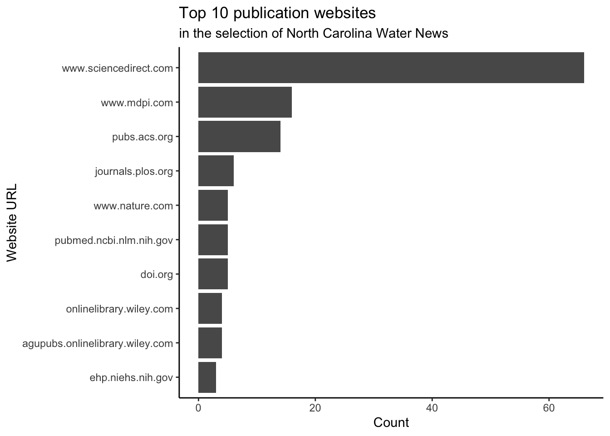

The goal of washopenresearch is to provide an overview of open research data related to Water Sanitation and Hygiene (WASH). The current version contains two datasets from the following sources:
-
washdev: Open access journal Journal of Water, Sanitation and Hygiene for Development -
uncnewsletter: Research section of the newsletter North Carolina Water News
Installation
You can install the development version of washopenresearch from GitHub with:
# install.packages("devtools")
devtools::install_github("openwashdata/washopenresearch")Alternatively, you can download the individual datasets as a CSV or XLSX file from the table below.
| dataset | CSV | XLSX |
|---|---|---|
| washdev | Download CSV | Download XLSX |
| uncnewsletter | Download CSV | Download XLSX |
Data
The package provides access to two datasets washdev and uncnewsletter. Each dataset collects information on scientific articles about (1) article metadata (e.g. title, first author, correspondence author), (2) supplementary material information, (3) data availability statement, and (4) semantic information (e.g. keywords)
library(washopenresearch)washdev
The dataset washdev contains data on open access articles of the Journal of Water, Sanitation & Hygiene for Development (Vol.1 Issue 1 - Vol.13 Issue 11). It has 924 observations from March 2011 to November 2023.
washdev |>
head() |>
gt::gt() |>
gt::as_raw_html()| paperid | volume | issue | url | journal | title | published_year | is_supp | num_supp | supp_file_type | supp_url | num_authors | first_author_name | first_author_affiliation | first_author_affiliation_region | first_author_email | first_author_orcid | correspondence_author_name | correspondence_author_affiliation | correspondence_author_affiliation_region | correspondence_author_email | correspondence_author_orcid | has_das | das | das_type | das_repo_url | keywords |
|---|---|---|---|---|---|---|---|---|---|---|---|---|---|---|---|---|---|---|---|---|---|---|---|---|---|---|
For an overview of the variable names, see the following table.
| variable_name | variable_type | description |
|---|---|---|
| paperid | integer | ID number of the paper on the journal website |
| volume | integer | Volume number of the journal |
| issue | integer | Issue number of the journal |
| url | character | Official website url of the paper |
| journal | character | Full name of the journal |
| title | character | Title of the paper |
| published_year | integer | Year of publication |
| is_supp | logical | Whether the paper has supplementary materials |
| num_supp | integer | Number of supplementary material files |
| supp_file_type | character | File type of the supplementary materials |
| supp_url | character | Website url of the supplementary materials |
| num_authors | integer | Number of the authors |
| first_author_name | character | Name of the first author |
| first_author_affiliation | character | Academic affiliation of the first author |
| first_author_affiliation_region | character | Country or region of the first author parsed from first_author_affiliation variable |
| first_author_email | character | Email of the first author |
| first_author_orcid | character | ORCID of the first author |
| correspondence_author_name | character | Name of the correspondence author |
| correspondence_author_affiliation | character | Academic affiliation of the correspondence author |
| correspondence_author_affiliation_region | character | Country or region of the correspondence author parsed from correspondence_author_affiliation variable |
| correspondence_author_email | character | Email of the correspondence author |
| correspondence_author_orcid | character | ORCID of the correspondence author |
| has_das | logical | Whether the paper has a data availability statement |
| das | character | Original data availability statement of the paper |
| das_type | factor | Type of the data availability statement #todo |
| das_repo_url | character | Website url of the data if the relevant data of the paper is shared on a public repository |
| keywords | vector | List of keywords of the paper |
uncnewsletter
The dataset uncnewsletter contains data on a curated list of articles published at the Research section of the newsletter North Carolina Water News.
uncnewsletter |>
head() |>
gt::gt() |>
gt::as_raw_html()| paper_id | issue_url | paper_url | url_source | journal | title | published_year | is_supp | num_supp | supp_file_type | supp_link | num_authors | first_author_name | first_author_affiliation | first_author_affiliation_region | first_author_email | first_author_orcid | correspondence_author_name | correspondence_author_affiliation | correspondence_author_affiliation_region | correspondence_author_email | correspondence_author_orcid | has_das | das | das_type | citations | keywords |
|---|---|---|---|---|---|---|---|---|---|---|---|---|---|---|---|---|---|---|---|---|---|---|---|---|---|---|
For an overview of the variable descriptions, see the following table.
| variable_name | variable_type | description |
|---|---|---|
| paperid | integer | ID number of the paper on the journal website |
| volume | integer | Volume number of the journal |
| issue | integer | Issue number of the journal |
| url | character | Official website url of the paper |
| journal | character | Full name of the journal |
| title | character | Title of the paper |
| published_year | integer | Year of publication |
| is_supp | logical | Whether the paper has supplementary materials |
| num_supp | integer | Number of supplementary material files |
| supp_file_type | character | File type of the supplementary materials |
| supp_url | character | Website url of the supplementary materials |
| num_authors | integer | Number of the authors |
| first_author_name | character | Name of the first author |
| first_author_affiliation | character | Academic affiliation of the first author |
| first_author_affiliation_region | character | Country or region of the first author parsed from first_author_affiliation variable |
| first_author_email | character | Email of the first author |
| first_author_orcid | character | ORCID of the first author |
| correspondence_author_name | character | Name of the correspondence author |
| correspondence_author_affiliation | character | Academic affiliation of the correspondence author |
| correspondence_author_affiliation_region | character | Country or region of the correspondence author parsed from correspondence_author_affiliation variable |
| correspondence_author_email | character | Email of the correspondence author |
| correspondence_author_orcid | character | ORCID of the correspondence author |
| has_das | logical | Whether the paper has a data availability statement |
| das | character | Original data availability statement of the paper |
| das_type | factor | Type of the data availability statement #todo |
| das_repo_url | character | Website url of the data if the relevant data of the paper is shared on a public repository |
| keywords | vector | List of keywords of the paper |
Example
- What are the top 10 countries(or regions) the first authors from in the Journal of Water, Sanitation and Hygiene for Development?
library(washopenresearch)
washdev |>
group_by(first_author_affiliation_region) |>
summarise(count=n()) |>
arrange(desc(count)) |>
head(10) |>
ggplot() +
geom_bar(aes(x = reorder(first_author_affiliation_region, count), y = count), stat = "identity") +
labs(title = "Top 10 countries of first author",
subtitle = "in the Journal of Water, Sanitation and Hygiene for Development",
x = "First Author Region", y = "Count")
- What are the top choices of keywords in WASH Dev?
Each publication may provide a list of keywords, typically 5-7, to summarize the topics of the article. Here we compile all keywords and calculate their frequency to be used.
keywords_freq <- washdev$keywords |>
purrr::map(function(x) str_extract_all(x, pattern = "(?<=')[^',]*?(?='\\s*)")[[1]]) |>
unlist() |>
str_to_lower() |>
table() |>
as.data.frame() |>
as_tibble() |>
arrange(desc(Freq))
# Top 30 keywords
ggplot(data = head(keywords_freq, 20)) +
geom_bar(aes(x = reorder(Var1, Freq), y=Freq), stat = "identity") +
coord_flip() +
labs(title = "Top 20 Keywords in WASH Dev Journal", x = "Keywords", y = "Count")
License
Data are available as CC-BY.
Citation
Please cite this package using:
citation("washopenresearch")
#> To cite package 'washopenresearch' in publications use:
#>
#> Zhong M (2024). _washopenresearch: Dataset about open research data
#> information in Water, Sanitation, and Hygiene_. R package version
#> 0.0.1.
#>
#> A BibTeX entry for LaTeX users is
#>
#> @Manual{,
#> title = {washopenresearch: Dataset about open research data information in Water, Sanitation, and Hygiene},
#> author = {Mian Zhong},
#> year = {2024},
#> note = {R package version 0.0.1},
#> }